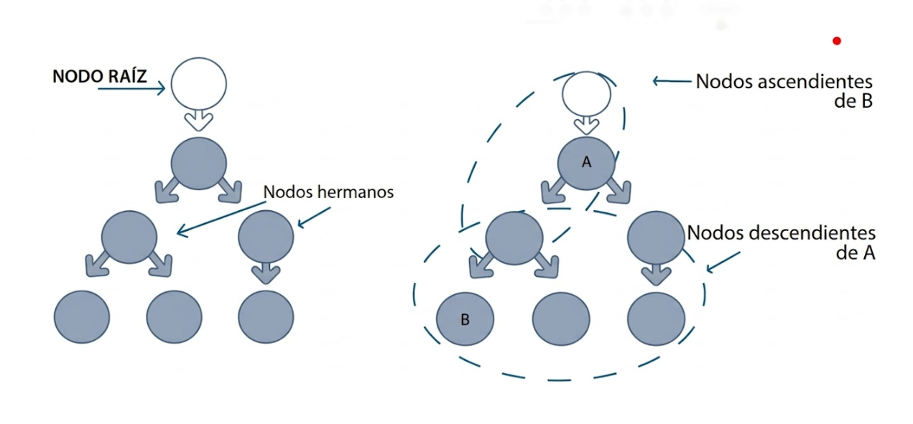

1. Herramientas y Lenguajes
BaseX: Aplicación para manejar bases de datos XML nativas.
- XPath: Localiza elementos en el árbol.
- XSLT: Transforma XML a HTML u otros formatos.
- XSL-FO: Para formatos de impresión como PDF.
2. Estructura de Nodos
El XML se organiza como un árbol familiar (Raíz, descendientes, hermanos). El nodo raíz siempre es /.

3. Resumen de Sintaxis y Selección
| Sintaxis | Descripción |
|---|---|
//nodo |
Selecciona nodos en cualquier parte del documento. |
@atributo |
Selecciona atributos del elemento. |
.. |
Selecciona el padre del nodo actual. |
text() |
Selecciona solo el texto contenido. |
* Los predicados se escriben entre corchetes [...] para filtrar resultados.
4. Formatos
Formato JSON:JSON es un formato ligero basado en pares clave-valor. Es más legible y fácil de procesar que el XML en entornos web.
{
"empresa": "Tech Solutions",
"empleados": [
{ "nombre": "Carlos", "edad": 30 },
{ "nombre": "Ana", "edad": 25 }
]
}
Formato YAML:
- Sintaxis limpia y sin comillas.
- Se basa en la indentación.
- Independiente del lenguaje.
# Ejemplo YAML (indentación)
asignatura: LM
tema: 12
contenidos:
- BaseX
- XQuery
- JSON
completo: true